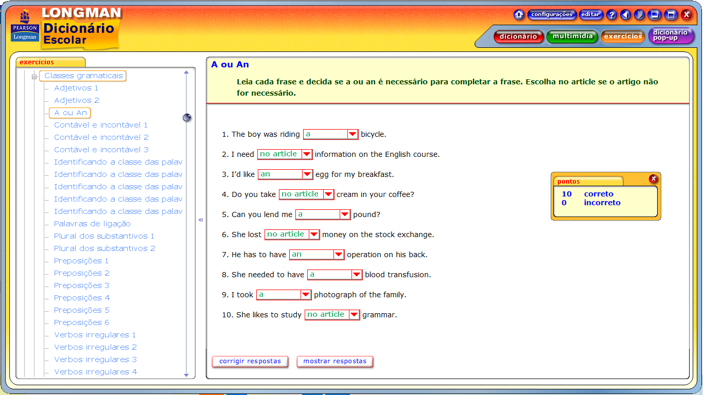
The boy was riding a bicycle = O menino estava andando de bicicleta
I need no article information on the English course = Não preciso de informações de artigos sobre o curso de inglês
I'd like an egg for my breakfast = Eu gostaria de um ovo no meu café da manhã
Do you take no article cream in your coffee ? = Você não toma nenhum creme no seu café?
Can you lend me a pound ? = Você pode me emprestar uma libra?
She lost no article money on the stock exchange. = Ela não perdeu nenhum dinheiro na bolsa de valores.
He has to have an operation on his back = Ele tem que fazer uma operação nas costas
She needed to have a blood transfusion = Ela precisava de uma transfusão de sangue
I took a photograph of the family = Tirei uma foto da família
She likes to study no article grammar. = Ela gosta de estudar gramática sem artigos.
Por: Gustavo Henrique
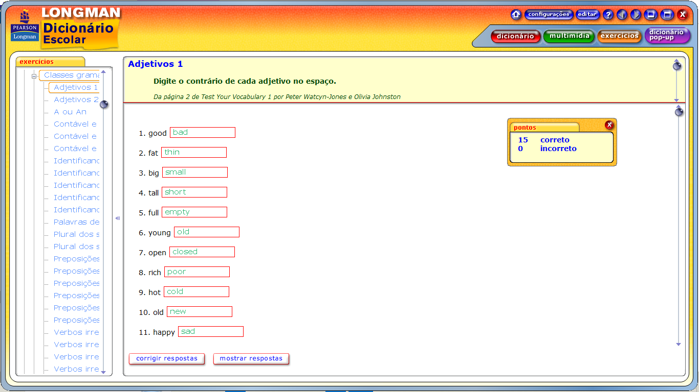
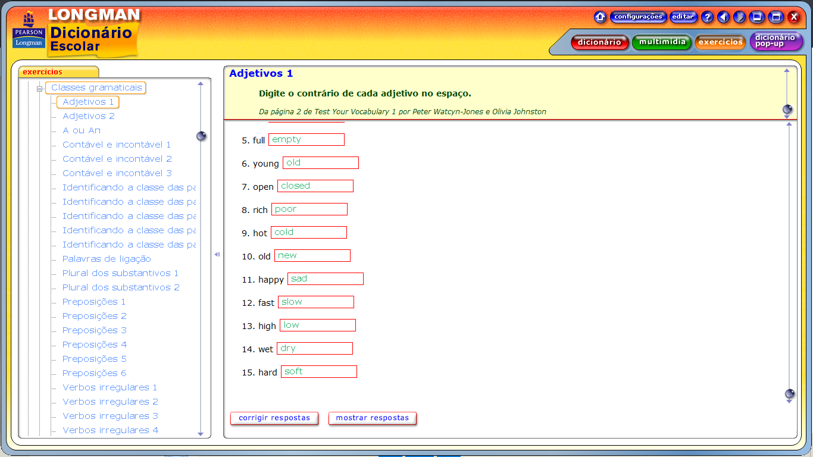
good = bad / bom = mal
fat = thin / gordo = magro
big = small / grande = pequeno
tall = short / alto = baixo
full = empty / cheio = vazio
young = old / jovem = velho
open = closed / abrir = fechar
rich = poor / rico = pobre
hot = cold / quente = frio
old = new / antigo = novo
happy = sad / feliz = triste
fast = show / rápido = mostrar
high = low / alto = baixo
wet = dry / molhado = seco
hard = soft / duro = macio
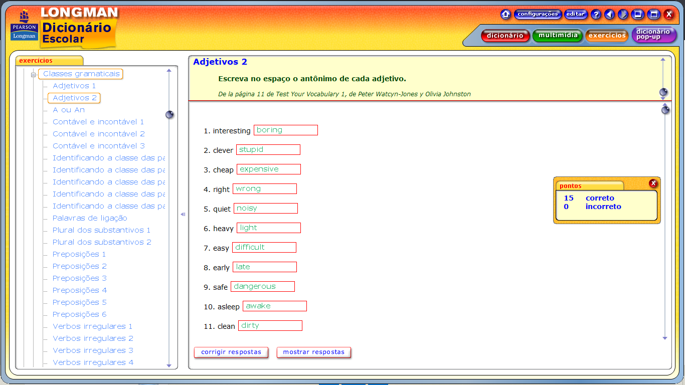
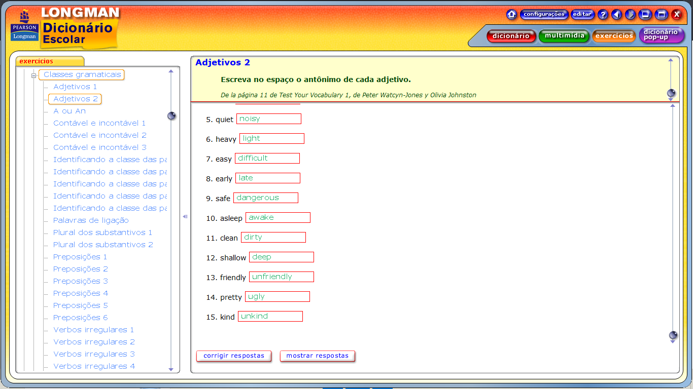
interesting = boring / interessante = chato
clever = stupid / inteligente = estúpido
cheap = expensive / barato = caro
right = wrong / certo = errado
quiet = noisy / silencioso = barulhento
heavy = light / pesado = leve
easy = difficult / fácil = díficil
early = late / cedo = tarde
safe = dangerous / seguro = perigoso
asleep = awake / dormindo = acordado
clean = dirty / limpo = sujo
shallow = deep / raso = profundo
friendly = unfriendly / amigável = hostil
pretty = ugly / bonito = feio
kind = unkind / gentil = cruel
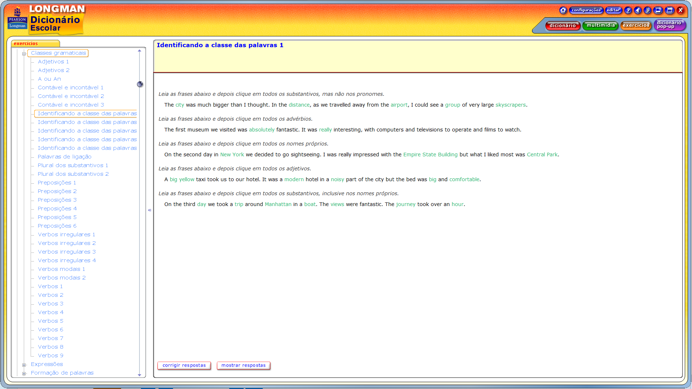
Leia as frases abaixo e depois clique em todos os substantivos,
mas não nos pronomes
The city was much bigger than I thought. In the distance,
as we travelled away from the aiport, I could
see a group of very large skyscrapers
os substantivos são: city, distance, airport, group, skyscrapers
Leia as frases abaixo e depois clique em todos os advérbios,
The first museum we visited was absolutely fantastic.
It was really interesting, with computers and televisions
to operate and films to watch.
os advérbios são: absolutely, really
Leia as frases abaixo e depois clique em todos os nomes próprios.
On the second day in New York we decided to go sightseeing. I was
really impressed with the Empire State Building but what I liked
most was Central Park.
os nomes próprios são: New York, Empire State Building, Central Park
Leia as frases abaixo e depois clique em todos os adjetivos.
A big yellow taxi took us to our hotel. It was a modern hotel in a noisy
part of the city but the bed was big and comfortable.
os adjetivos são: New York, Empire State Building, Central Park
Leia as frases abaixo e depois clique em todos os substantivos, inclusive
nos nomes próprios.
On the third day we took a trip around Manhanttan in a boat.
The views were fantastic. The journey took over an hour.
os nomes próprios são: Manhanttan.
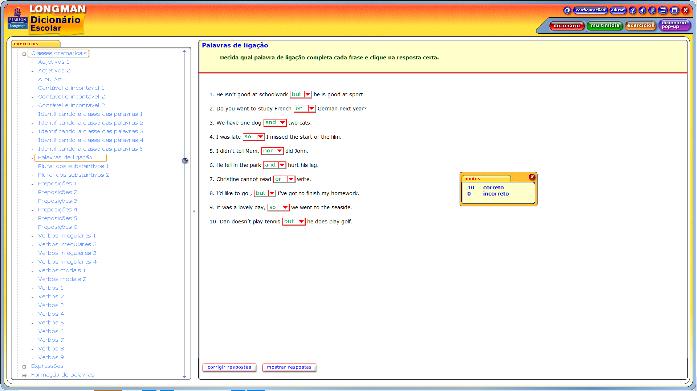
He isn't good at schoolwork but he is good at sport = Ele não é bom nos trabalhos escolares, mas é bom nos esportes
Do you want to study French or German next year ? = Você quer estudar francês ou alemão no próximo ano?
We have one dog and two cats. = Temos um cachorro e dois gatos.
I was late so I missed the start of the film. = Cheguei atrasado e perdi o início do filme.
I didn't tell Mum, nor did John. = Eu não contei para mamãe, nem John.
He fell in the park and hurt his leg. = Ele caiu no parque e machucou a perna.
Christine cannot read or write. = Christine não sabe ler nem escrever.
I'd like to go, but I've got to finish my homework. = Eu gostaria de ir, mas tenho que terminar meu dever de casa.
It was a lovely day, so we went to the seaside. = Estava um dia lindo, então fomos para a beira-mar.
Dan doesn't play tennis but he does play golf. = Dan não joga tênis, mas joga golfe.
potato = potatoes / batata = batatas
mouse = mice / rato = ratos
foot = feet / pé = pés
man = men / homen = homens
child = children / criança = crianças
kiss = kisses / beijo = beijos
baby = babies / bebê = bebês
taxi = taxis / Táxi = Táxis
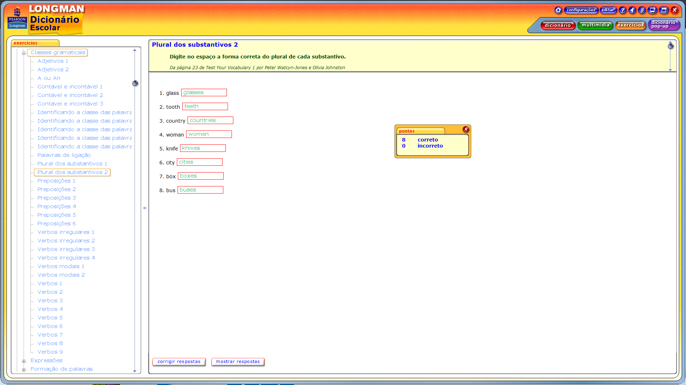
glass = glasses / vidro = vidros
tooth = teeth / dente = dentes
country = countries / país = países
woman = women / mulher = mulheres
knife = knives / faca = facas
city = cities / cidade = cidades
box = boxes / caixa = caixas
bus = buses / ônibus = ônibus
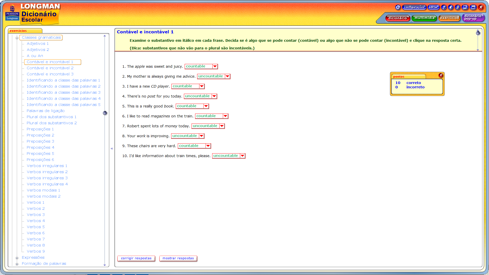
The apple was sweet and jucy = countable = countable / A maçã era doce e suculenta = contável
My mother is always giving me advice = uncountable / Minha mãe está sempre me dando conselhos = incontáveis
I have a new CD player = countable / Eu tenho um novo CD player = contável
There's no post for you today = uncountable / Não há postagem para você hoje = incontável
This is a really good book = countable / Este é um livro muito bom = contável
I like to read magazines on the train = uncountable / Gosto de ler revista no trem = incontáveis
Robert spent lots of money today = uncountable / Robert gastou muito dinheiro hoje = incontável
Your work is improving = uncountable / Seu trabalho está melhorando = incontável
These chars are very hard = countable / Esses caracteres são muito difíceis = contáveis
I'd like information about train times, please = uncountable / Gostaria de informações sobre horários de trens, por favor = incontáveis
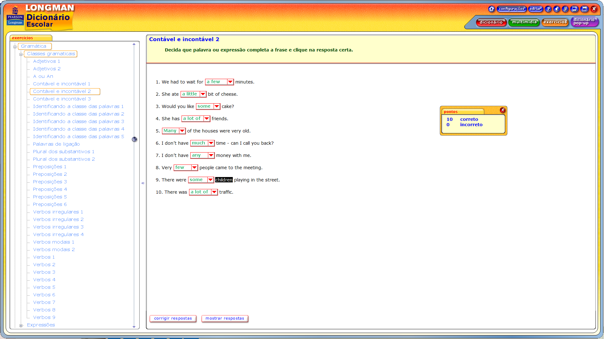
We had to wait for a few minutes = Tivemos que esperar alguns minutos
She ate a little bit of cheese = Ela comeu um pouco de queijo
Would you like some cake ? = Você gostaria de um pouco de bolo ?
She has a lot of friends = Ela tem muitos amigos
Many of the houses were very old = Muitas das casas eram muito antigas.
I don't have much time can I call you back ? = Não tenho muito tempo, posso te ligar de volta ?
I don't have any money with me = Eu não tenho dinheiro comigo
Very few people came to the meeting = Poucas pessoas compareceram à reunião.
There were some children playing in the street = Havia algumas crianças brincando na rua
There was a lot of traffic = Havia muito trânsito
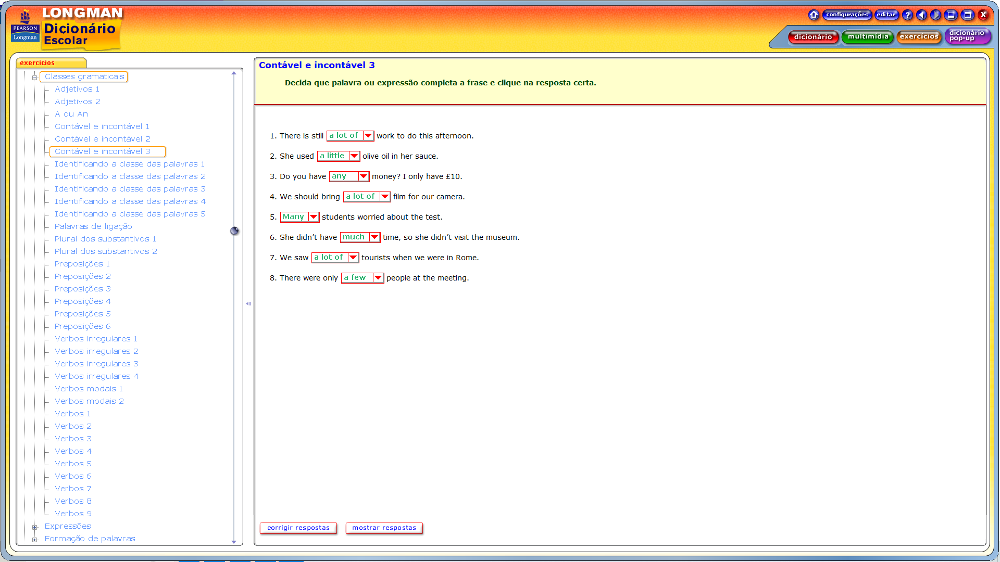
There is still a lot of work to do this afternoon = Ainda há muito trabalho a fazer esta tarde
She used a little olive oil in her sauce = Ela usou um pouco de azeite no molho
Do you have any money ? I only have ten euros = Você tem algum dinheiro ? Eu só tenho dez euros
We should bring a lot of film for our camera = Deveriamos trazer muito filme para nossa câmera
Many students worried about the test = Muitos alunos preocupados com a prova
She didn't have much time, so she didn't visit the museum = Ela não tinha muito tempo, então não visitou o museu
We saw a lot of tourists when we were in Rome = Vimos muitos turistas quando estávamos em Roma.
There were only a few people at the meeting = Havia apenas algumas pessoas na reunião
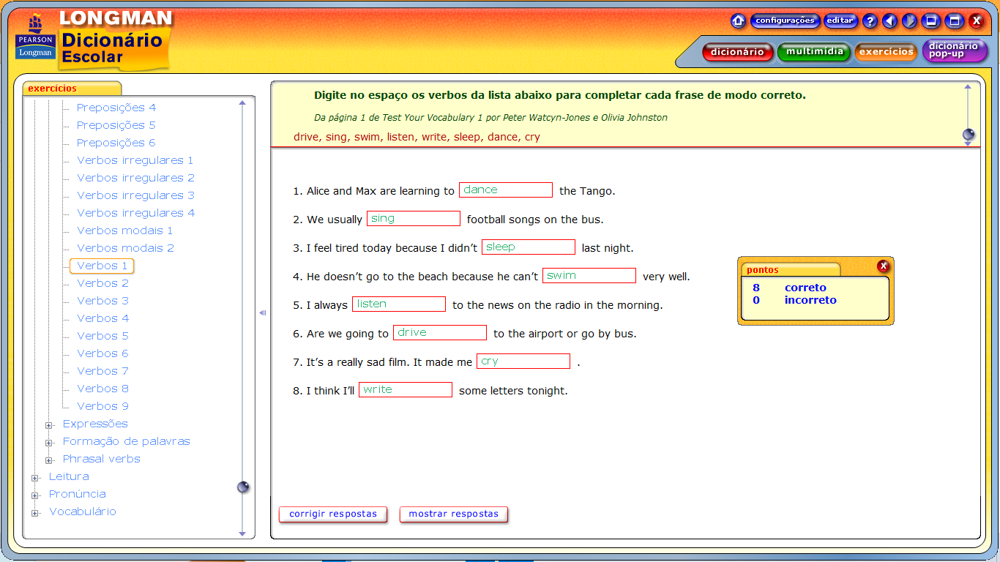
os verbos são: drive, sing, swim, listen, write, sleep, dance, cry
Alice and Max are learning to dance the Tango = Alice e Max estão aprendendo a dançar Tango
We usually sing football songs on the bus = Nós geralmente cantamos músicas de futebol no ônibus
He doesn´t go to the beach because he can´t swim very well = Ele não vai à praia porque não sabe nadar muito bem.
I always listen to the news on the radio in the morning = Eu sempre ouço as notícias no rádio pela manha.
Are we going to drive to the airport or go by bus = Vamos dirigir até o aeroporto ou ir de ônibus ?
It's a really sad film. It made me cry = É um filme muito triste. Me fez chorar
It's a really sad film. It made me cry = É um filme muito triste. Me fez chorar.
I think I`ll write some letters tonight = Acho que vou escrever algumas cartas hoje a noite
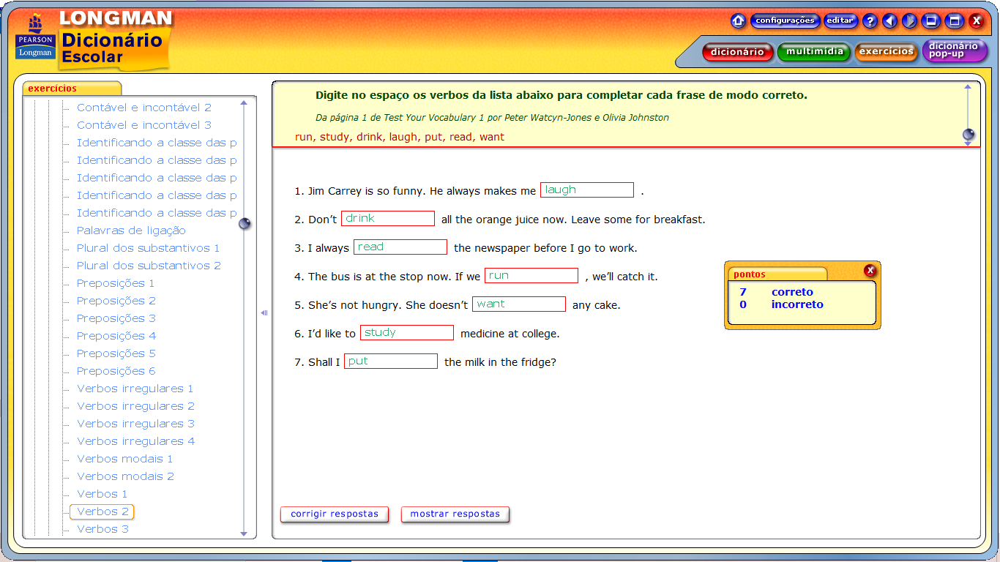
os verbos são: run, study, drink, laugh, put, read, want
Jim Carrey is so funny. He always makes me laugh = Jim Carrey é tão engraçado. Ele sempre me faz rir
Don't drink all the orange juice now. Leave some for breakfast = Não beba todo o suco de laranja agora. Deixe um pouco para o café da manhã
I always read the newspaper before I go to work = Eu sempre leio o jornal antes de ir trabalhar
The bus is at the stop now. If we run, we'll catch it. = O ônibus está no ponto agora. Se corrermos, vamos pegá-lo.
She's not hungry. She doesn't want any cake = Ela não está com fome. Ela não quer bolo
I'd like to study medicine at college = Eu gostaria de estudar medicina na faculdade
Shall I put the milk in the fridge ? = Devo colocar o leite na geladeira?
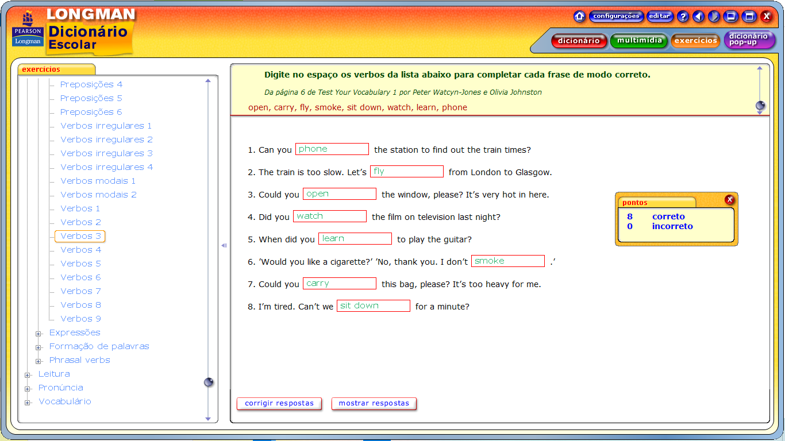
os verbos são: open, carry, fly, smoke, sit down, watch, learn, phone
Can you phone the station to find out the train times ? = Você pode telefonar para a estação para saber os horários dos trens?
Could you open the window, please ? It's very hot in here = Você poderia abrir a janela, por favor? Está muito quente aqui
Did you watch the film on television last night ? = Você assistiu ao filme na televisão ontem à noite
When did you learn to play the guitar ? = Quando você aprendeu a tocar violão
'Would you like a cigarette ?' 'No, thank you. I don't smoke = 'Você gostaria de um cigarro ?' 'Não, obrigado. eu não fumo
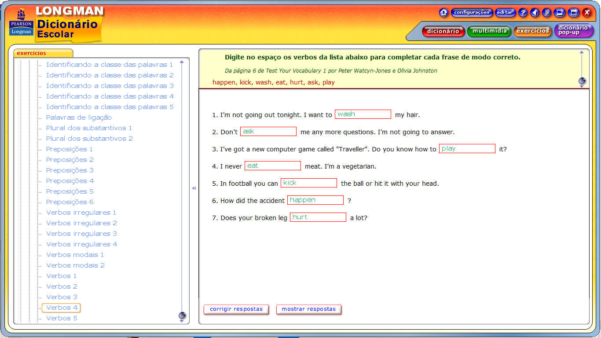
os verbos são: happen, kick, wash, eat, hurt, ask, play
I'm not going out tonight. I want to wash my hair = Não vou sair esta noite.
Eu quero lavar meu cabelo
Don't ask me any more questions. I'm not going to answer = Não me faça mais perguntas. eu não vou responder
I've got a new computer game called "Traveller". Do you know how to play it ?
= Tenho um novo jogo de computador chamado "Traveller". Você sabe como jogar?
I never eat meat. I'm a vegetarian = Eu nunca como carne. Eu sou vegetariano
In football you can kick the ball or hit it with your head
= No futebol você pode chutar a bola ou bater nela com a cabeça
How did the accident happen ? = Como aconteceu o acidente ?
Does your broken leg hurt a lot ? = Sua perna quebrada dói muito?
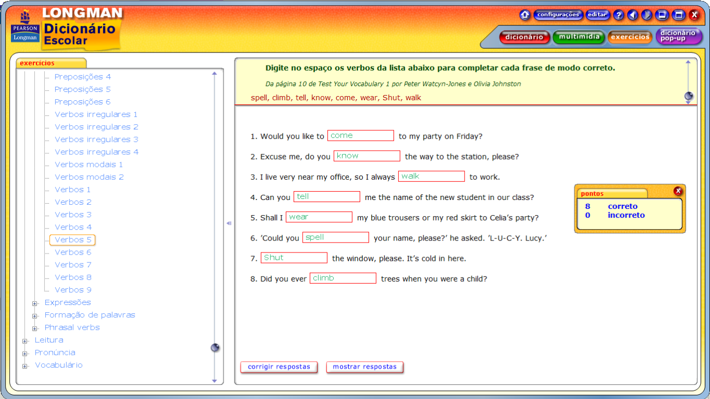
os verbos são: spell, climb, tell, know, come, wear, shut, walk
Would you like to come to my party on Friday ?
= Você gostaria de vir à minha festa na sexta-feira ?
Excuse me, do you know the way to the station, please ? =
Com licença, você sabe o caminho para a estação, por favor ?
I live very near my office, so I always walk to work =
Moro muito perto do meu escritório, então sempre vou a pé para o trabalho
Can you tell me the name of the new student in our class ? =
Você pode me dizer o nome do novo aluno da nossa turma ?
Shall I wear my blue trousers or my red skirt to Celia's party ?
= Devo usar minha calça azul ou minha saia vermelha na festa da Celia?
Shall I wear my blue trousers or my red skirt to Celia's party ?
= Devo usar minha calça azul ou minha saia vermelha na festa da Celia?
Could you spell your name, please ? he' asked. LUCY. Lucy ?
Você poderia soletrar seu nome, por favor? ele perguntou. LUCY. Lucy?
Shull the window, please. It's cold in here.
= Feche a janela, por favor. Está frio aqui.
Did you ever climb trees when you were a child ?
= Você já subiu em árvores quando era criança?
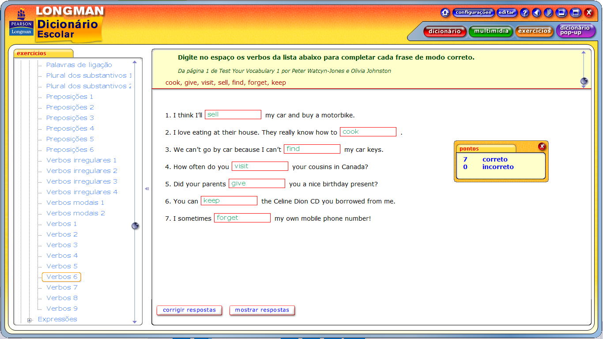
os verbos são: cook, give, visit, sell, find, forget, keep
I think I'll sell my car and buy a motorbike =
Acho que vou vender meu carro e comprar uma moto
I love eating at their house. They really know how to cook
= Adoro comer na casa deles. Eles realmente sabem cozinhar
We can't go by car because I can't find my car keys =
Não podemos ir de carro porque não encontro as chaves do meu carro
How often do you visit your cousins in Canada ? =
Com que frequência você visita seus primos no Canadá ?
Did your parents give you a nice birthday present ? =
Seus pais lhe deram um lindo presente de aniversário ?
You can keep the Celine Dion CD you borrowed from me =
Você pode ficar com o CD da Celine Dion que você me emprestou
I sometimes forget my own mobile phone number = Às vezes esqueço-me do meu próprio
número de telemóvel
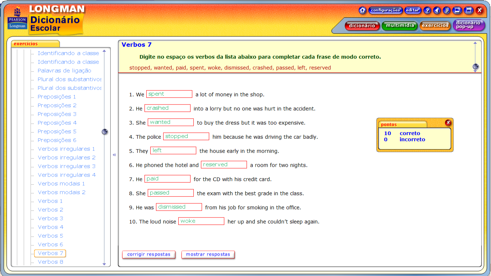
os verbos são: stopped, wanted, paid, spent, woke, dismissed,
crashed, passed, left, reserved
We spent a lot of money in the shop. = Gastamos muito dinheiro na loja.
He crashed into a lorry but no one was hurt in the accident. =
Ele bateu em um caminhão, mas ninguém ficou ferido no acidente.
She wanted to buy the dress but it was too expensive. =
Ela queria comprar o vestido, mas era muito caro.
The police stopped him because he was driving the car badly. =
A polícia o parou porque ele estava dirigindo mal.
They left the house early in the morning. =
Eles saíram de casa cedo pela manhã.
He phoned the hotel and reserved a room for two nights. =
Ele telefonou para o hotel e reservou um quarto por duas noites.
He paid for the CD with his credit card. =
Ele pagou pelo CD com seu cartão de crédito.
She passed the exam with the best grade in the class. =
Ela passou no exame com a melhor nota da classe.
He was dismissed from his job for smoking in the office. =
Ele foi demitido do trabalho por fumar no escritório.
The loud noise woke her up and she couldn’t sleep again. =
O barulho alto a acordou e ela não conseguiu dormir novamente.
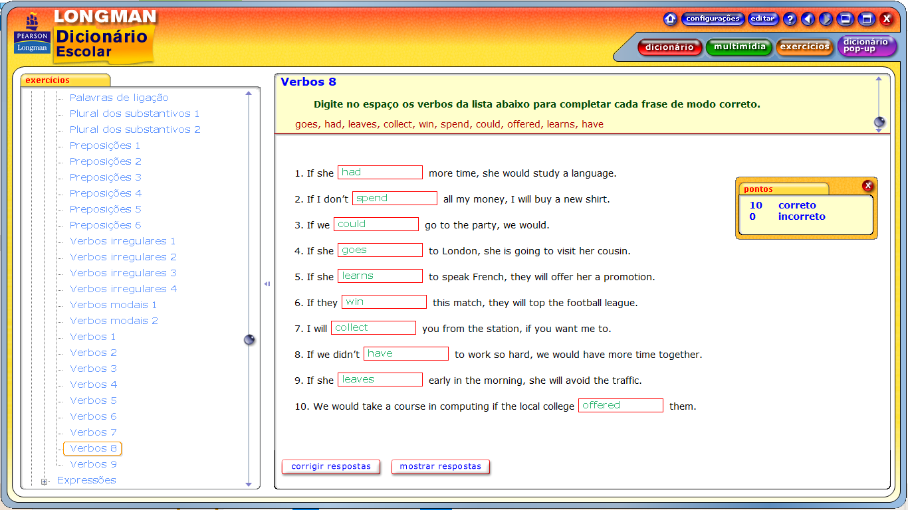
os verbos são: goes, had, leaves, collect, win, spend,
could, offered, learns, have
If she had more time, she would study a language. =
Se ela tivesse mais tempo, ela estudaria uma língua.
If I don’t spend all my money, I will buy a new shirt. =
Se eu não gastar todo o meu dinheiro, comprarei uma camisa nova.
If we could go to the party, we would. =
Se nós pudéssemos ir à festa, iríamos.
If she goes to London, she is going to visit her cousin. =
Se ela for a Londres, ela vai visitar sua prima.
If she learns to speak French, they will offer her a promotion. =
Se ela aprender a falar francês, eles lhe oferecerão uma promoção.
If they win this match, they will top the football league. =
Se eles vencerem esta partida, liderarão a liga de futebol.
I will collect you from the station, if you want me to. =
Eu irei te buscar na estação, se você quiser.
If we didn’t have to work so hard, we would have more time together. =
Se não tivéssemos que trabalhar tanto, teríamos mais tempo juntos.
If she leaves early in the morning, she will avoid the traffic. =
Se ela sair cedo pela manhã, ela evitará o trânsito.
We would take a course in computing if the local college offered them. =
Nós faríamos um curso de informática se o colégio local os oferecesse.
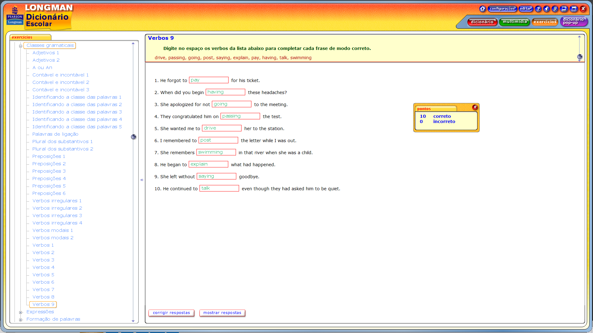
os verbos são: drive, passing, going, post, explain, pay, having, talk
swimming
He forgot to paty for his ticket = Ele esqueceu de pagar a passagem.
When did you begin having these headaches ? = Quando você começou a ter essas dores de cabeça ?
She apologized for not going to the meeting = Ela se desculpou por não ter ido à reunião.
They congratulated him on passing the test. = Eles o parabenizaram por passar no teste
She wanted me to drive her to the station = Ela queria que eu a levasse até a estação
I remembered to post the letter while I was out = Lembrei-me de postar a carta enquanto estava fora
She remembers swimming in that river when she was a child = Ela se lembra de nadar naquele rio quando era criança
He began to explain what had happened = Ele começou a explicar o que tinha acontecido
She left without saying goodbye = Ela saiu sem se despedir
He continued to talk even though they had asked him to be quiet. = Ele continuou a falar, mesmo tendo pedido para ele ficar quieto.
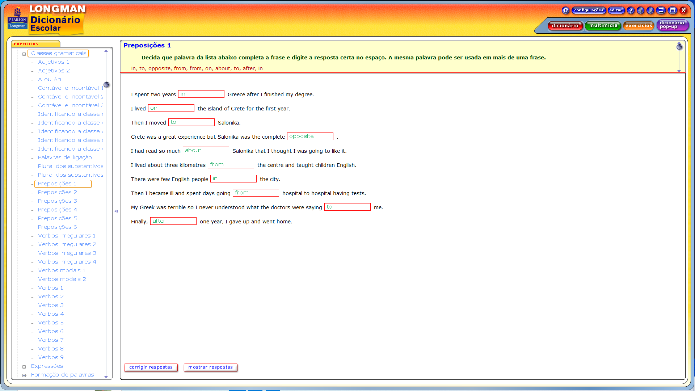
os verbos são: in, to, opposite, from, from, on, about, to, after, in
I spent two years in Greece after I finished my degree. = Passei dois anos na Grécia depois de terminar a minha licenciatura.
I lived on the island of Crete for the first year = Eu vivi na ilha de Creta durante o primeiro ano
Then I moved to Salonika = Depois mudei-me para Salónica
Crete was a great experience but Salonika was the complete opposite =
Creta foi uma ótima experiência, mas Salônica foi o completo oposto
I had read so much about Salonika that I thought. I was going to like it. =
Eu tinha lido tanto sobre Salônica que pensei. Eu ia gostar.
I lived about three kilometres from the centre and taught children English. =
Eu morava a cerca de três quilômetros do centro e ensinava inglês para crianças.
There were few English people in the city = Havia poucos ingleses na cidade.
Then I became ill and spent days going from hospital to hospital having tests =
Depois fiquei doente e passei dias indo de hospital em hospital fazendo exames.
My Greek was terrible so I never understood what the doctors were saying to me =
Meu grego era terrível, então eu nunca entendia o que os médicos estavam dizendo para mim.
Finally, after one year, I gave up and went home = Finalmente, depois de um ano, desisti e fui para casa.
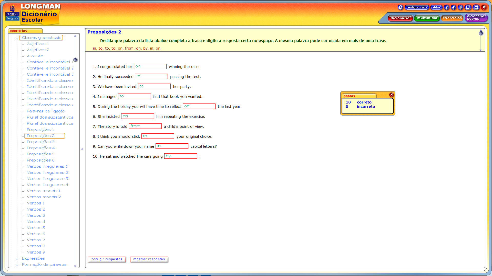
os verbos são: in, to, to, on, to, on, from, on, by, in
I congratulated her on winning the race. = Eu a parabenizei por vencer a corrida.
He finally succeeded in passing the test. = Ele finalmente conseguiu passar no teste.
We have been invited to her party. = Fomos convidados para a festa dela.
I managed to find that book you wanted. = Eu consegui encontrar o livro que você queria.
During the holiday you will have time to reflect on the last year. = Durante as férias, você terá tempo para refletir sobre o ano passado.
She insisted on him repeating the exercise. = Ela insistiu que ele repetisse o exercício.
The story is told from a child's point of view. = A história é contada do ponto de vista de uma criança.
I think you should stick to your original choice. = Eu acho que você deveria manter sua escolha original.
Can you write down your name in capital letters? = Você pode escrever seu nome em letras maiúsculas?
He sat and watched the cars going by. = Ele se sentou e observou os carros passando.
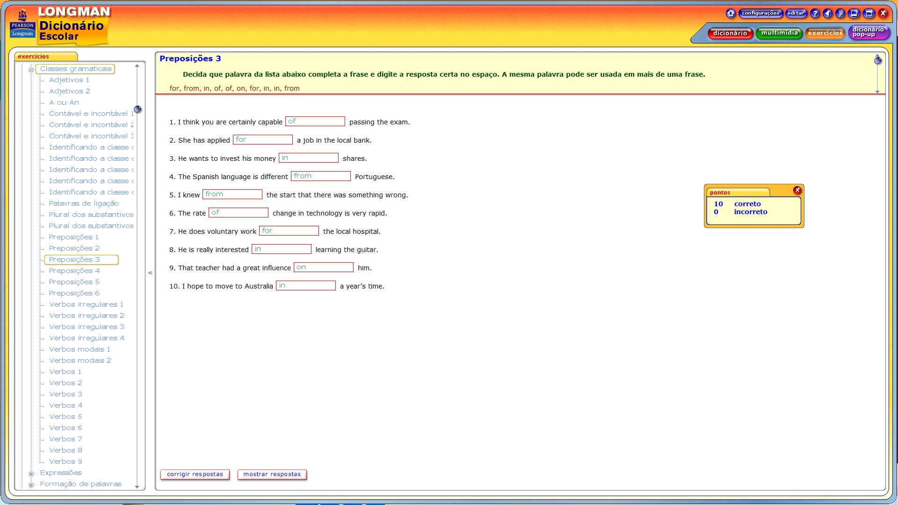
os verbos são: for, from, in, of, of, on, for, in, on, in, for, from
I think you are certainly capable of passing the exam = Eu acho que você é certamente capaz de passar no exame.
She has applied for a job in the local bank = Ela se candidatou a um emprego no banco local.
He wants to invest his money in shares = Ele quer investir seu dinheiro em ações.
The Spanish language is different from Portuguese = A língua espanhola é diferente do português.
I knew from the start that there was something wrong = Eu sabia desde o início que havia algo errado.
The rate of change in technology is very rapid = A taxa de mudança na tecnologia é muito rápida.
He does voluntary work for the local hospital = Ele faz trabalho voluntário para o hospital local.
He is really interested in learning the guitar = Ele está realmente interessado em aprender a tocar violão.
That teacher had a great influence on him = Aquele professor teve uma grande influência sobre ele.
I hope to move to Australia in a year’s time = Espero me mudar para a Austrália em um ano.
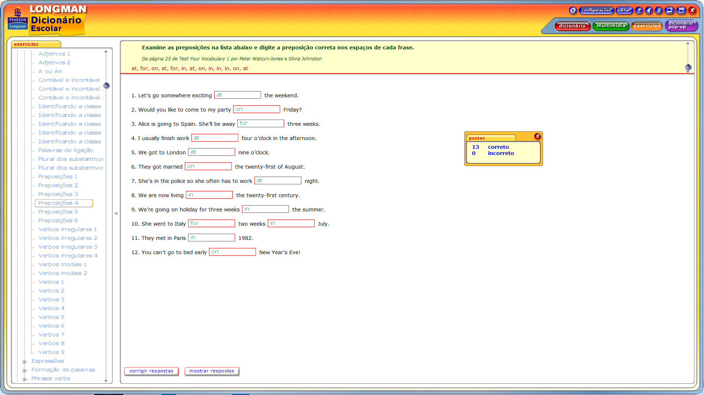
As preposições são: at, for, on, at, for, in, on, in, on, at
Let's go somewhere exciting at the weekend. = Vamos a algum lugar emocionante no final de semana.
Would you like to come to my party on Friday? = Você gostaria de vir à minha festa na sexta-feira?
Alice is going to Spain. She’ll be away for three weeks. = Alice está indo para a Espanha. Ela ficará fora por três semanas.
I usually finish work at four o’clock in the afternoon. = Eu geralmente termino o trabalho às quatro horas da tarde.
We got to London at nine o’clock. = Chegamos a Londres às nove horas.
They got married on the twenty-first of August. = Eles se casaram no dia 21 de agosto.
She’s in the police so she often has to work at night. = Ela está na polícia, então frequentemente precisa trabalhar à noite.
We are now living in the twenty-first century. = Agora estamos vivendo no século XXI
We’re going on holiday for three weeks in the summer. = Vamos sair de férias por três semanas no verão.
She went to Italy for two weeks in July. = Ela foi para a Itália por duas semanas em julho.
They met in Paris in 1982. = Eles se conheceram em Paris em 1982.
You can’t go to bed early on New Year’s Eve! = Você não pode ir para a cama cedo na véspera de Ano Novo!
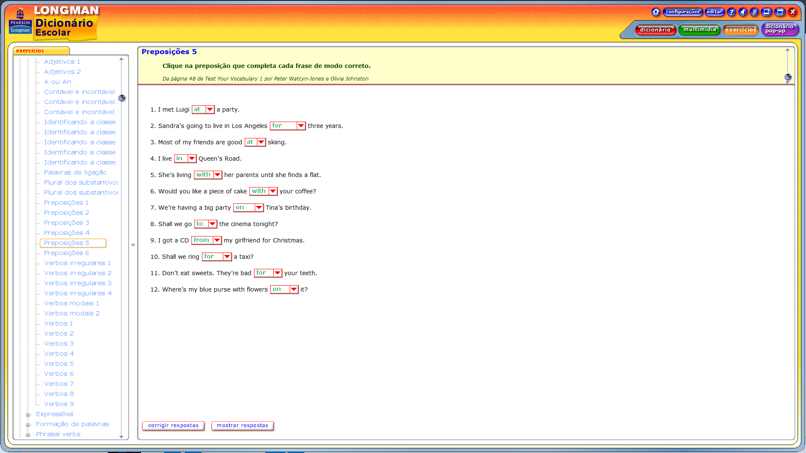
I met Luigi at a party. = Conheci o Luigi numa festa.
Sandra’s going to live in Los Angeles for three years. = Sandra vai morar em Los Angeles por três anos.
Most of my friends are good at skiing. = A maioria dos meus amigos é boa em esquiar.
I live in Queen’s Road. = Eu moro na Queen's Road.
She’s living with her parents until she finds a flat. = Ela está morando com os pais até encontrar um apartamento.
Would you like a piece of cake with your coffee? = Você gostaria de um pedaço de bolo com seu café?
We’re having a big party on Tina’s birthday. = Vamos dar uma grande festa no aniversário da Tina.
Shall we go to the cinema tonight? = Vamos ao cinema hoje à noite?
I got a CD from my girlfriend for Christmas. = Ganhei um CD da minha namorada no Natal.
Shall we ring for a taxi? = Vamos chamar um táxi?
Don’t eat sweets. They’re bad for your teeth. = Não coma doces. Eles são ruins para os seus dentes.
Where’s my blue purse with flowers on it? = Onde está minha bolsa azul com flores?
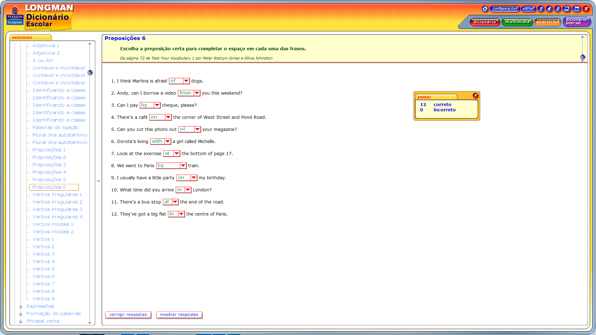
I think Martina is afraid of dogs. = Acho que Martina tem medo de cachorros.
Andy, can I borrow a video from you this weekend? = Andy, posso pegar um vídeo emprestado de você neste fim de semana?
Can I pay by cheque, please? = Posso pagar com cheque, por favor?
There’s a café on the corner of West Street and Pond Road. = Há um café na esquina da West Street com a Pond Road.
Can you cut this photo out of your magazine? = Você pode recortar esta foto da sua revista?
Dorota’s living with a girl called Michelle. = Dorota está morando com uma garota chamada Michelle.
Look at the exercise at the bottom of page 17. = Olhe para o exercício no final da página 17.
We went to Paris by train. = Fomos para Paris de trem.
I usually have a little party on my birthday. = Geralmente faço uma pequena festa no meu aniversário.
What time did you arrive in London? = Que horas você chegou em Londres?
There’s a bus stop at the end of the road. = Há um ponto de ônibus no final da rua.
They’ve got a big flat in the centre of Paris. = Eles têm um apartamento grande no centro de Paris.
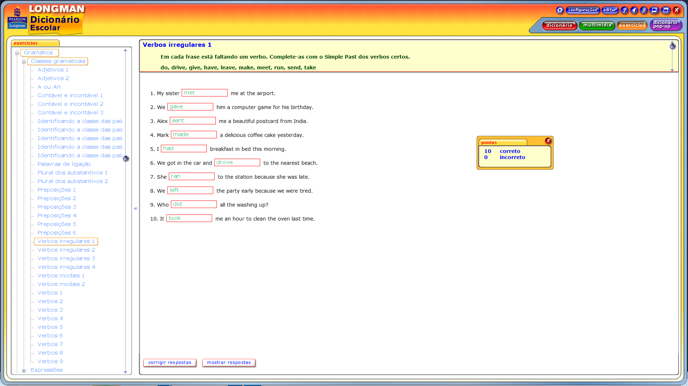
My sister meet me at the aiport = Minha irmã me encontre no aeroporto
We gave him a computer game for his birthday = Demos a ele um jogo de computador de aniversário
Alex sent me a beautiful postcard from India. = Alex me enviou um lindo cartão postal da Índia.
Mark made a deliciuos coffee cake yestarday = Mark fez um bolo de café delicioso ontem
I had breakfast in bed this morning = Tomei café da manhã na cama esta manhã
We got in the car and drove to the nearest beach = Entramos no carro e fomos até a praia mais próxima
She ran to the station beacause she was Iate. = Ela correu para a estação porque estava atrasada.
We left the party early because we were tired. = Saímos da festa mais cedo porque estávamos cansados.
Who did all the washing up ? = Quem lavou toda a louça?
It look me an hour to clean the oven last time. = Demorei uma hora para limpar o forno da última vez.
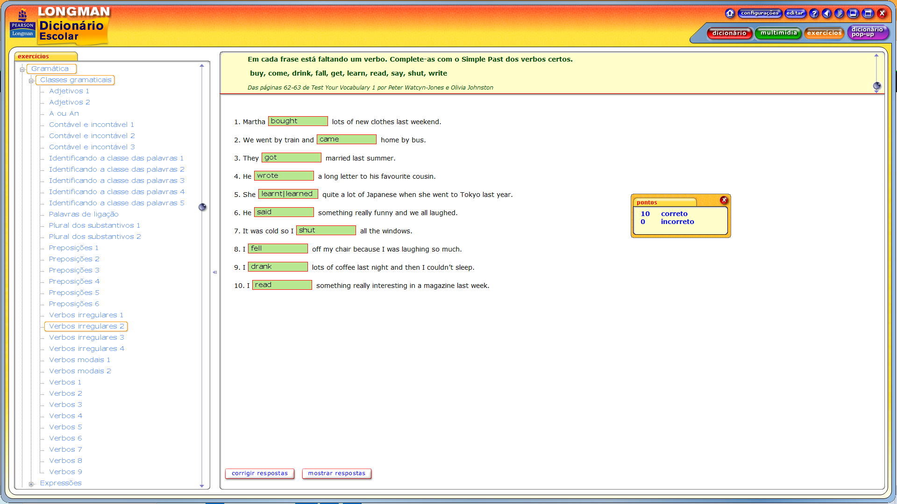
buy, come, drink, fall, get, learn, read, say, shut, write
1. Martha bought lots of new clothes last weekend. = Martha comprou muitas roupas novas no fim de semana passado.
2. We went by train and came home by bus. = Nós fomos de trem e voltamos de ônibus.
3. They got married last summer. = Eles se casaram no verão passado.
4. He wrote a long letter to his favourite cousin. = Ele escreveu uma longa carta para seu primo favorito.
5. She learnt/learned quite a lot of Japanese when she went to Tokyo last year. = Ela aprendeu bastante japonês quando foi a Tóquio no ano passado.
6. He said something really funny and we all laughed. = Ele disse algo muito engraçado e todos rimos.
7. It was cold so I shut all the windows. = Estava frio, então eu fechei todas as janelas.
8. I fell off my chair because I was laughing so much. = Eu caí da cadeira porque estava rindo muito.
9. I drank lots of coffee last night and then I couldn’t sleep. = Eu bebi muito café ontem à noite e depois não consegui dormir.
10. I read something really interesting in a magazine last week. = Eu li algo muito interessante em uma revista na semana passada.
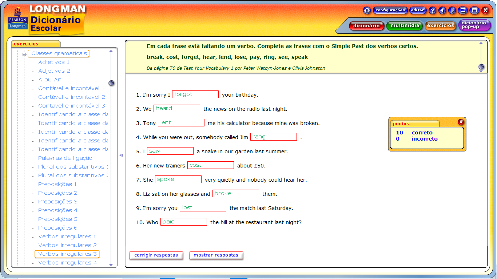
1. I’m sorry I forgot your birthday. = Sinto muito, eu esqueci o seu aniversário.
2. We heard the news on the radio last night. = Nós ouvimos as notícias no rádio ontem à noite.
3. Tony lent me his calculator because mine was broken. = Tony me emprestou sua calculadora porque a minha estava quebrada.
4. While you were out, somebody called Jim rang. = Enquanto você estava fora, alguém ligou para Jim.
5. I saw a snake in our garden last summer. = Eu vi uma cobra no nosso jardim no verão passado.
6. Her new trainers cost about £50. = Os tênis novos dela custaram cerca de £50.
7. She spoke very quietly and nobody could hear her. = Ela falou muito baixo e ninguém pôde ouvi-la.
8. Liz sat on her glasses and broke them. = Liz sentou em seus óculos e os quebrou.
9. I’m sorry you lost the match last Saturday. = Desculpe, você perdeu a partida no sábado passado.
10. Who paid the bill at the restaurant last night? = Quem pagou a conta no restaurante ontem à noite?
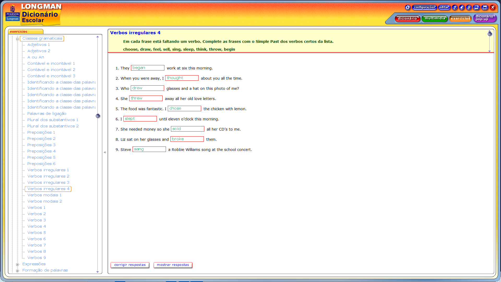
1. They began work at six this morning. = Eles começaram a trabalhar às seis da manhã.
2. When you were away, I thought about you all the time. = Quando você estava fora, eu pensava em você o tempo todo.
3. Who drew glasses and a hat on this photo of me? = Quem desenhou óculos e um chapéu nesta foto minha?
4. She threw away all her old love letters. = Ela jogou fora todas as suas antigas cartas de amor.
5. The food was fantastic. I chose the chicken with lemon. = A comida estava fantástica. Eu escolhi o frango com limão.
6. I slept until eleven o’clock this morning. = Eu dormi até as onze horas da manhã.
7. She needed money so she sold all her CD’s to me. = Ela precisava de dinheiro, então vendeu todos os seus CDs para mim.
8. Liz sat on her glasses and broke them. = Liz sentou-se nos óculos e os quebrou.
9. Steve sang a Robbie Williams song at the school concert. = Steve cantou uma música de Robbie Williams no concerto da escola.
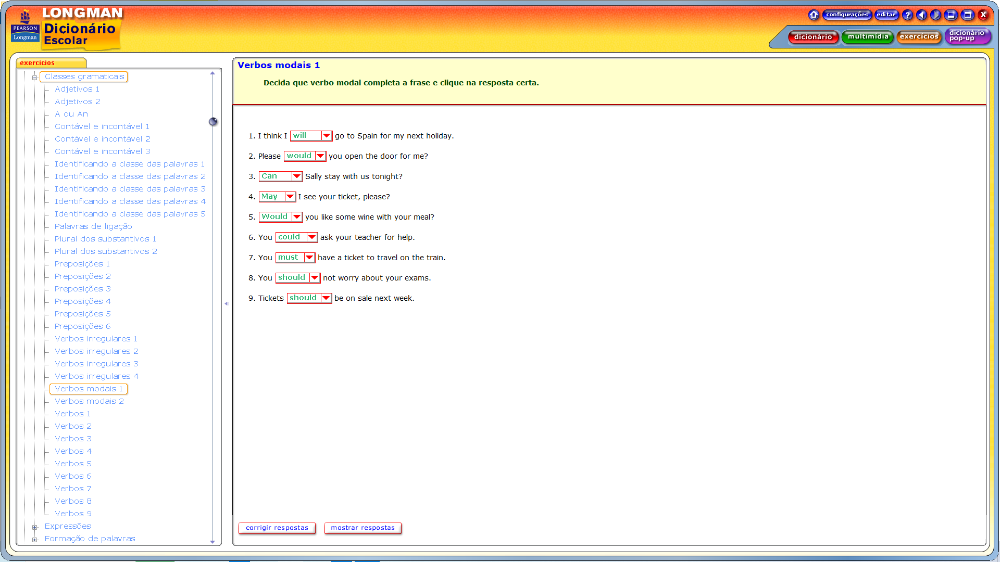
I think I will go to Spain for my next holiday = Acho que irei para a Espanha nas minhas próximas férias
Please would you open the door for me ? = Por favor, você poderia abrir a porta para mim?
Can Sally stay with us tonight ? = Sally pode ficar conosco esta noite?
May I see your ticket, please ? = Posso ver seu ingresso, por favor?
Would you like some wine with your meal ? = Você gostaria de um pouco de vinho com sua refeição?
You could ask your teacher for help = Você pode pedir ajuda ao seu professor
You must have a ticket to travel on the train. = Você precisa ter uma passagem para viajar de trem.
You should not worry about your exams = Você não deve se preocupar com seus exames
Tickets should be on sale next week = Os ingressos devem estar à venda na próxima semana
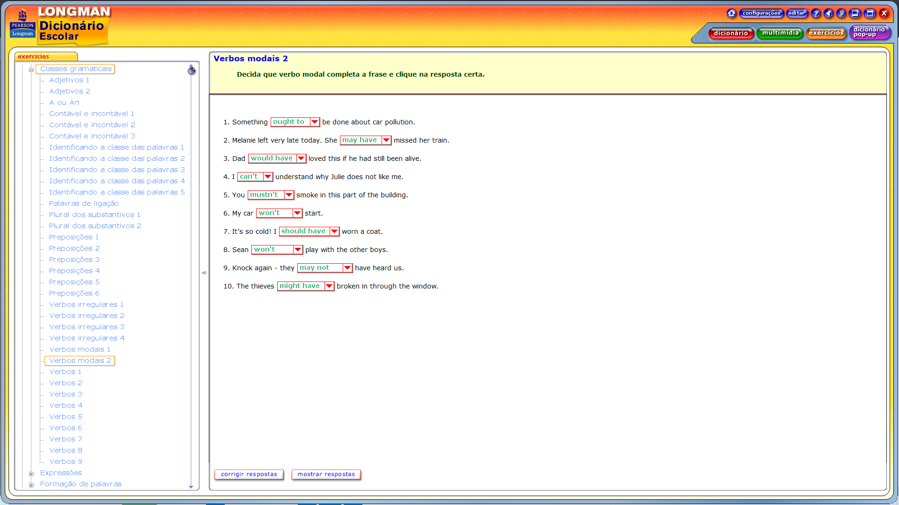
Something ought to be done about car pollution = Algo deve ser feito sobre a poluição dos carros
Melanie left very Iate today, She may have missed her train = Melanie saiu muito tarde hoje, ela pode ter perdido o trem
Did would have loved this if he had still been alive. = Teria adorado isso se ainda estivesse vivo.
I can´t understand why Julie does not like me = Não consigo entender por que Julie não gosta de mim
You mustn`t smoke in this part of the Building = Não é permitido fumar nesta parte do edifício
My car won't start = Meu carro não pega =
It's so cold! I should have worn a coat. = Está tão frio! Eu deveria ter usado um casaco.
Sean won't play with the other boys = Sean não quer brincar com os outros meninos
Knock again - they may not have heard us. = Bata novamente - eles podem não ter nos ouvido.
The thieves might have broken in through the window. = Os ladrões podem ter arrombado a janela.